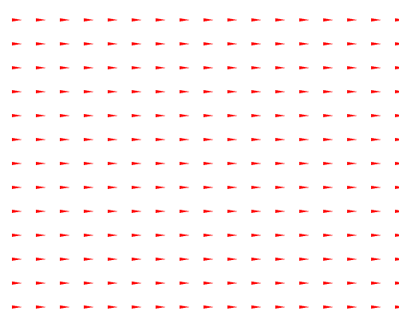
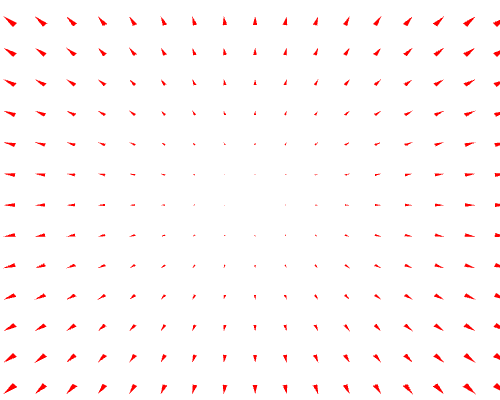
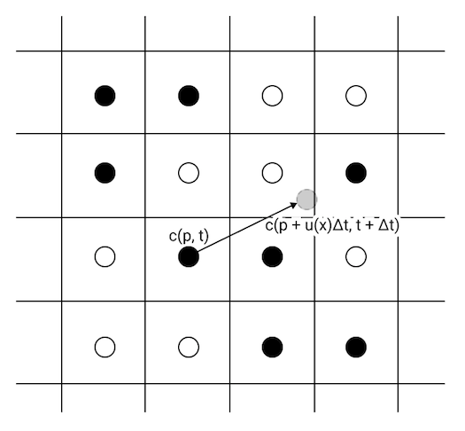

Fluid Simulation (with WebGL demo)
Note: The demos in this post rely on WebGL features that might not be implemented in mobile browsers.
About a year and a half ago, I had a passing interest in trying to figure out how to make a fluid simulation. At the time, it felt just a bit out of my reach, requiring knowledge of shaders, vector calculus, and numerical computation that were all just a little bit past my grasp. At the time, I was working through the Fluid Simulation Course Notes from SIGGRAPH 2007, and was struggling with the math. Now armed with a bit more knowledge and a lot more time, and with the help of other less dense resources like GPU Gems Chapter 38. Fast Fluid Dynamics Simulation on the GPU, I was finally able to figure out enough to get something working. I am still a beginner at simulations like this, and I’m going to brazenly ignore things like numerical stability, but hopefully I can help leapfrog you past a few places I got stuck.
We’re going to work with the simplest 2D fluid simulation, where the entire area is full of fluid, and we’re going to ignore viscosity.
The Velocity Field
As compared to a rigid, unrotating solid, where every bit of the thing has to be moving in the same direction at the same speed, each bit of a fluid might be moving differently. One way to model this is to use a vector field representing velocity. For any given \( (x, y) \) coordinate, this field will tell you the velocity of the fluid at that point.
$$ \vec u(x, y) = (u_x, u_y) $$
A nice way to get an intuition about what a given field looks like is to sample the function in a grid of points, then draw arrows starting at each grid point whose size and orientation are dictated by the value of the function at that point. For the purposes of this post, we’re always going to be working over the domain \( x \in [-1, 1] \), \( y \in [-1, 1] \).
For instance, here’s a very simple field \( \vec u(x, y) = (1, 0) \) representing everything moving at a constant speed to the right.

And here’s a more interesting one \( \vec u(x, y) = (x, y) \) where things move away from the origin, increasing in speed the farther away from the origin they are.

We’re going to play with this one, \( \vec u(x, y) = \left( \sin (2 \pi y), \sin (2 \pi x) \right) \), since it creates some interesting visual results once we start making the fluid move accordingly.

For a more thorough introduction to vector fields, check out the Introduction to Vector Fields video on Khan Academy. The rest of the videos on multivariate calculus might prove useful for understanding concepts in fluid flow too.
Now then, let’s get things moving.
Advection
Advection is the transfer of a property from one place to another due to the motion of the fluid. If you’ve got some black dye in some water, and the water is moving to the right, then surprise surprise, the black dye moves right.
If the fluid is moving in a more complex manner, that black dye will get pulled through the liquid in a more complex manner.
Before we dive into how advection works, we need to talk a bit about the format of the data underlying these simulations.
The simulation consist of two fields: color and velocity. Each field is represented by a two dimensional grid. For simplicity, we use the same dimensions as the output pixel grid.
Previously, I described the velocity field as an analytical function \( \vec u(x, y) \). In practice, that analytical function is only used to initialize the grid values.
The simulation runs by stepping forward bit-by-bit in time, with the state of the color and velocity grids depending only on the state of the color and velocity grids from the previous time step. We’ll use \( \vec u(\vec p, t) \) to represent the velocity grid at 2d position \( \vec p \) and time \( t \), and \( \vec c(\vec p, t) \) to represent the color in the same manner.
So how do we move forward in time? Let’s just talk about how the color field changes for now. If we consider each grid point as a little particle in the fluid, then one approach is to update the color of the fluid where that particle will be, one time step in the future.

In order to run these simulations in real-time at high resolution, we want to implement them on the GPU. It turns out that this method of updating the value at the new location of the particle is difficult to implement on the GPU.
First, the position we want to write, \( \vec p + \vec u(\vec p, t) \Delta t \) might not lie on a grid point, so we’d have to distribute the impact of the write across the surrounding grid points. Second, many of our imaginary particles might end up in the same place, meaning we need to analyze the entire grid before we decide what the new values of each grid point might be.
So, instead of figuring out where our imaginary particles at the grid points go to, we’ll figure out where they came from in order to calculate the next time step.

With this scheme, we only need to write to a single grid point, and we don’t need to consider the contributions of imaginary particles coming from multiple different places.
The last teensy hurdle is figuring out the value of \( \vec c(\vec p - \vec u(\vec p, t) \Delta t, t ) \), since \( \vec p - \vec u(\vec p, t) \) might not be at a grid point. We can hop this hurdle using bilinear interpolation on the surrounding 4 grid points (the ones linked by the dashed grey rectangle above).
Advecting the Velocity Field
Barring a bizarre sequence of perfectly aligned fans underneath the liquid, there’s no reason why the velocity field wouldn’t change over time. Just as black ink would move through the fluid, so too will the velocity field itself! Just as we can advect \( \vec c \) through \( \vec u \), we can also advect \( \vec u \) through itself!
Intuitively you can think of it this way: a particle moving in a certain direction will continue moving in that direction, even after it’s moved.
Since we’re storing velocity in a grid just like we did with color, we can use the exact same routine to advect velocity through itself. Below, watch the velocity change over time, with an initial velocity field of \( \vec u = (1, \sin(2 \pi y)) \).
If you tried playing around with this, and saw a bunch of weird hard edges and might’ve thought to yourself “I don’t think fluids work like that…”, you’d be right. We’re missing an important ingredient, but before we look at the solution, let’s take a closer look at the problem.
Divergent Fields
Something about the velocity field below makes this intuitively not feel like a fluid. Fluids just don’t behave like this.
Same problem with this one…
If you look at where the arrows are pointing in each of the above 2 simulations, you’ll see that there are spots where the all the arrows point away from that spot, and others where all the arrows point toward that spot. Assuming the volume of the liquid is staying constant, the density of the fluid has to be changing for such a velocity field to be possible.
Water is roughly incompressible. That means that at every spot, you have to have the same amount of fluid entering that spot as leaving it.
Mathematically, we can represent this fact by saying a field is divergence-free. The divergence of a velocity field \( \vec u \), indicated with \( div(\vec u) \) or \( \nabla \cdot \vec u \), is a measure of how much net stuff is entering or leaving a given spot in the field. For our 2D velocity field, it’s defined like this:
The first of the two not-very-fluidy fields above has an equation \( \vec u(x, y) = (x, y) \). Taking the divergence, we find:
This positive value tells us that, in all places, more stuff is leaving that point than entering it. In physical terms, this means that the density is decreasing uniformly everywhere.
The other not-very-fluidy field has an equation \( \vec u(x, y) = \sin(2 \pi x), 0) \). If we look at its divergence, we see:
Which tells us that in some places, density is increasing (where \( \nabla \cdot \vec u < 0 \)), and in others, density is decreasing (where \( \nabla \cdot \vec u > 0 \)).
Doing the same operation on the more fluidy looking swirly velocity field \( \vec u = (\sin ( 2 \pi y), \sin ( 2 \pi x ) \) that you saw in the section about advection, we discover \( \nabla \cdot \vec u = 0 \).
An incompressible fluid will have a divergence of zero everywhere. So, if we want our simulated fluid to look kind of like a real fluid, we better make sure it’s divergence-free.
Since our velocity field undergoes advection and can be influenced by clicking and dragging around the fluid, having an initially divergence-free velocity field isn’t enough to guarantee that the field will continue to be divergence-free. For example, if we take our swirly simulation and start advecting the velocity field through itself, we end up with something divergent:
So we need a way of taking a divergent field and making it divergence-free. To understand what force makes that happen in the real world, we need to talk about some honest-to-goodness physics.
Navier-Stokes
The Navier-Stokes equations describe the motion of fluids. Here are the Navier-Stokes equations for incompressible fluid flow:
Where \( \vec u \) is the velocity field, \( \rho \) is density, \( p \) is pressure, \( \nu \) is the kinematic viscosity, and \( \vec F \) is external forces acting upon the fluid.
Since we’re pretending the viscosity of our fluid is zero, we can drop the \( \nu \) term in the first equation. In our simple simulation, external forces are only applied by dragging the mouse, so we’ll ignore that term for now, opting to allow it to influence the velocity field directly.
Dropping those terms, we’re left with the following:
We can expand this to its partial derivative form, expanding vector components to leave us with only scalar variables.
Remembering that these fields are all functions on \( (x, y, t) \), we can approximate the partial derivatives with finite differences. For instance, we can approximate the partial derivative of \( u_x \) with respect to \( t \) like so:
Because the procedure ends up being the same for both components, we’ll focus on only the \( x \) component here. Applying finite differences to all of the partial derivatives, we have this:
Ultimately what we want is \( \vec u(x, y, t + \Delta t) \), which will tell us, for a given point, what the velocity will be at the next time step. So let’s solve for that by rearranging the big long formula above:
If you look at the first three terms in this expression, what does it look like they conceptually represent? It looks like they represent the next velocity after we’ve taken into account changes due to the motion of the fluid itself. That sounds an awful like advection as discussed earlier. In fact, it will work quite well if we substitute the velocity field after it’s undergone advection. We’ll call the advected velocity field \( \vec u ^ a \). So now we have:
So after all of that, we have an equation that relates the velocity field at the next time tick to the current velocity field after it’s undergone advection, followed by application of pressure.
We know that a divergence-free field that undergoes advection isn’t necessarily still divergence-free, and yet we know that the Navier-Stokes equations for impressible flow represent divergence-free velocity fields, so therefore we have our answer about what in nature prevents the velocity field from becoming divergent: pressure!
Solving for Pressure
Now that we have an equation that relates \( \vec u \) to \( p \). This is where the math gets messy. We start from the second Navier-Stokes equation for incompressible flow, applied at time \( t + \Delta t \), and apply finite differences again:
Here, we can substitute our equations for \( \vec u \) expressed in terms of \( \vec u ^ a \) and \( p \) to get this monster:
Rearranging to have all of the \( p \) terms on the left and all the \( \vec u ^ a \) terms on the right, and multiplying both sides by \( 2 \epsilon \), we have:
Note: the above expression is a scalar expression, despite being laid out in a somewhat vector-y form.
At this point, it’s helpful to remember that, for the purposes of the simulation, we’re not interested in knowing the value of \( p \) everywhere: we only care about knowing its value at enough places to calculate the value of the velocities at the grid points. To meet that end, we can similarly calculate \( p \) on the grid. To accomplish this, we can make \( \epsilon \) the distance between adjacent grid cells.
The above equation yields a new equation for every \( (x, y) \) of a grid point we substitute. For the purposes of discussion, let’s assume that the gap between adjacent cells is 0.1 units, so \( \epsilon = 0.1 \). Let’s examine what the equation yields for \( (x, y) = (0.3, 0.7) \).
All the values on the right hand side of this equation are known, and on the left we have 5 unknowns: the value of \( p \) at 5 different grid locations.
If we repeat this process and evaluate \( (x, y) \) at every grid point, we get one equation with 5 unknowns for each grid location. If our grid has \( n \times m \) grid locations in it, then we have \( n \times m \) equations, each with 5 unknowns.
If you’re wondering about what’s happening at the edges, we’re going to lazily side-step that question by making our grid wrap around: if you ask for the velocity past the bottom edge, you’ll get a value near the top edge.
Before we move on, our notation is getting a bit clunky, so let’s clean it up a tad since we know we’re working on a grid. For the next part, we’ll say \( p_{i,j} = p(i \epsilon, j \epsilon, t) \), and we’ll stick all the known values together into a value \( d \) (for divergence), like so:
With this nicer notation, we can express the system of equations on pressure that we’re trying to solve like so:
Iteratively Solving the Pressure Equation
Solving for \( p_{i, j} \) for every grid point analytically would be an enormous mess. Instead, we’re going to use an iterative method of solving this system of equations, where each iteration provides values closer and closer to a real solution. We’re going to use the Jacobi Method.
In the Jacobi method, we first rearrange our equation to isolate one term, like so:
Next, we make an initial guess for all of our unknowns. We’ll call this initial guess \( p_{i,j}^{(0)} \), and just set it to 0 everywhere.
Here’s where the iteration comes in: our next guess, \( p_{i, j}^{(1)} \) is obtained by plugging in our initial guess into the above formula:
And, more generally, each iteration relies upon the previous one:
You would usually run this until the values of one iteration are equal to the values from the previous iteration, rounded to a certain accuracy. For our purposes, we’re more interested in this running in a consistent period of time, so we’ll arbitrarily run this for 10 iterations, and hope the result is accurate enough to look realistic.
For a bit of intuition on why this converges to a solution, check out Algebraic Pavel’s answer on Math Exchange.
All Together Now!
Phew! That was a lot to get through. Now let’s put it all together. Roughly, as pseudo-code, here’s our whole simulation:
initialize color field, c
initialize velocity field, u
while(true):
u_a := advect field u through itself
d := calculate divergence of u_a
p := calculate pressure based on d, using jacobi iteration
u := u_a - gradient of p
c := advect field c through velocity field u
draw c
wait a bit
Here are the key formulas for those steps on grid coordinates \( (i, j) \), uncluttered by derivations:
Advecting field \( vec u \) through itself:
Divergence of \( \vec u_a \) (multiplied by constant terms):
Pressure calculation Jacobi iteration step, with \( p_{i, j}^{(0)} = 0 \):
Subtracting the pressure gradient from the advected velocity field:
Advecting the color field through the final velocity field:
Implementation
Pulling all those steps together, you can make something like this! Woohoo! When I got this working for the first time, I was pretty ecstatic.
I won’t delve too far into the implementation, but you can have a look at it yourself: fluid-sim.js. It relies upon the elegant lightgl.js, which is an abstraction layer on top of WebGL that makes it much nicer to work with. Unlike THREE.js, it doesn’t make any assumptions about you wanting any concept of a camera or lighting or that you’re working in 3D at all.
The key technique for running the simulation efficiently is doing all the hard work on the GPU. To meet this need, all of the computations are done via the render to texture technique, ping-ponging which texture is being rendered to facilitate reading and writing to the same conceptual texture (e.g. reading from the velocity field and writing to the velocity field representing the next time step).
Each one of the major components of the algorithm is implemented in a separate shader. There’s a shader for advection, a shader for calculating the divergence, one for a single iteration of the Jacobi method, and another for subtracting the pressure gradient from the advected velocity.
References
To make this, I had to draw from a lot of difference references, many of which are linked inline in the post.
Fluid Simulation Course Notes from SIGGRAPH 2007: Now a textbook, this is a pretty mathematically dense tutorial. It took me 4 or 5 times reading through most sections to make sense of it, and ultimately I only understood parts of it after I did the derivations myself. It uses the more complex conjugate gradient method instead of the Jacobi method to solve the system of pressure equations, which I got completely lost in, and abandoned. It delves into a lot of arguments about numerical accuracy and uses a more complex grid layout than I did, which I still don’t follow fully. It also has resources for other kinds of fluid simulations, like heightfield simulation, and smoothed particle hydrodynamics.
GPU Gems Chapter 38. Fast Fluid Dynamics Simulation on the GPU: This was the single most useful reference I found, and describes something very similar to this post. It walks through specific implementation ideas, and gave me a much better intuition for advection. Some of the math (or at least the notation) seems shaky here. I think the Gaussian “splat” formula is missing a negative sign inside of the \( exp() \), and I’m not sure what the notation \( (\vec u \cdot \nabla) u_x \) means in the first Navier-Stokes equation, since \( \nabla \cdot \vec u = 0 \) in the second equation.
“Elementary Linear Algebra” by Ron Larson, Section 10.2: Iterative Methods for Solving Linear Systems. This had a much clearer explanation of the Jacobi method than the GPU Gems chapter that allowed me to derive the pressure solve iteration myself. The full textbook can be found here: “Elementary Linear Algebra” on amazon.com.
Jonas Wagner’s fluid simulation on
canvas, and particularly the source for it (fluid.js) were helpful for understanding what a full solution actually looks like. It’s also how I found the GPU Gems article in the first place. Jonas went on later to reimplement his solution in WebGL: WebGL Fluid Simulation.